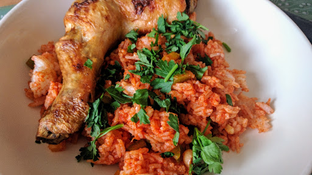

Piri-piri chicken with spicy rice
Use a lime-spiked spicy marinade to coat thighs and drumsticks then roast and serve with paprika rice for a cheap and healthy supper.
Ingredients
- about 4 skin-on chicken thighs and 4 drumsticks
- 6 tbsp piri-piri marinade (you can buy mild, medium or hot)
- 1 tbsp sunflower oil
- 2 peppers, any colour, deseeded and finely chopped
- 0.5 bunch spring onions, sliced, white and green parts separated
- 4 tbsp tomato purée
- 1 tbsp sweet smoked paprika
- 250 g cooked rice
- vegetables or salad, to serve (optional)
Instructions
- Heat oven to 200°C/180°C fan/Gas 6. Slash each piece of chicken 3 times, so the marinade can really flavour the meat. Pour over the sauce and leave in the fridge to marinate, if you have time. If not, mix well and arrange, skin-side up, in a roasting tin. Cook for 30 mins, then increase heat to 220°C/200°C fan/Gas 7 and cook for about 15 mins more until the skin is crispy and golden.
- When the chicken is almost ready, heat the oil in a frying pan. Cook the peppers and white parts of the spring onions for 5 mins. Tip in the purée and paprika, stir, then add the rice, breaking up with a wooden spoon so all the grains are coated well. Use a high heat and scrape any that sticks off the bottom so you get some soft and some crispy parts. Heat until piping hot. Scatter the green parts of the spring onion on top and serve with the chicken, and some vegetables or salad, if you like.
Source
www.bbcgoodfood.comShort URL